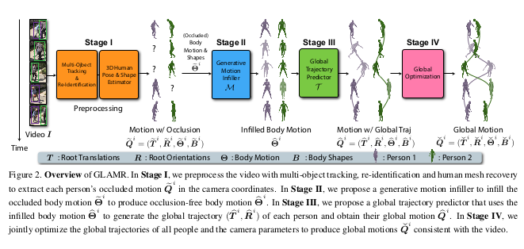
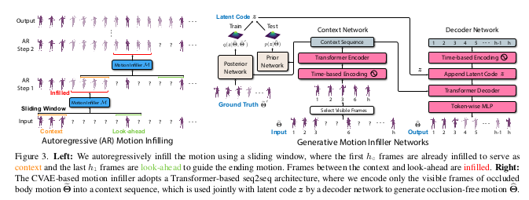
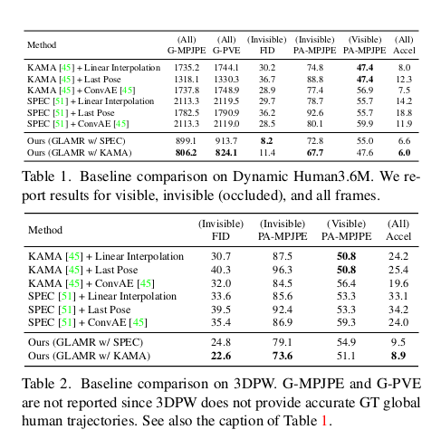

GLAMR: Global Occlusion-Aware Human Mesh Recovery With Dynamic Cameras(CVPR’22)
1. 연구 배경 및 목적
1) Problems
- Dynamic Camera 로 촬영된 단안(monocular) 영상에서 global 좌표계상의 3D human mesh recovery
- 심각한 long-term occlusions 문제 해결
- 물체에 의한 완전한 가림
- missed detection
- 카메라 시야각FoV(Field of View) 밖으로 나갔을 때
2) Prior Work
- 카메라 좌표계 또는 루트 좌표계에서만 추정, dynamic camera에서 global 좌표 복원 불가
- SLAM을 사용한 카메라 포즈 추정은 실외 환경에서 자주 실패, 스케일 모호성 문제
- 부분 가림만 처리 가능, 완전히 보이지 않는 장기 가림 상황 처리 불가
2. Method : 4 Stage Framework

Stage \(\mathbf{I}\) : Preprocessing
- Multi-Object Tracking(MOT) 및 Re-identification으로 각 사람의 바운딩 박스 시퀀스 추출
- Human Mesh Recovery(KAMA or SPEC) 을 사용해 카메라 좌표계에서 각 사람의 모션 \(\widetilde{Q}^i\)
- occlusion으로 인한 불완전한 모션 데이터도 포함
Stage \(\mathbf{I}\mathbf{I}\) : Generative Motion Infiller
- CVAE(Conditional Variational Autoencoder) 기반 Transformer 구조
- 가려진 바디 모션 \(\widetilde{\Theta}^i\)를 인필링하여 완전한 body motion \(\widehat{\Theta}^i\)를 생성

- Autoregressive Motion Infilling
- 슬라이딩 윈도우 사용(\(h\))
- Context(\(h_c\)) : 이미 인필링된 앞부분 프레임
- Look-ahead(\(h_l\)) : 끝부분 가이드를 위한 프레임
- Output(\(h_o\)): 실제 인필링 되는 중간 프레임
- \(h_o = h - h_c - h_l\)
- Motion Infiller Network
- Context Network : Transformer Encoder로 보이는 프레임만 인코딩(기존 CNN방법은 가려진 프레임 0으로 패딩 \(\rightarrow\) 보이는 부분만 attention)
- Decoder Network : latent code \(z\)와 context를 결합하여 Transformer Decoder와 MLP로 생성
- Prior/Posterior Network : CVAE의 잠재 코드 푼포 생성
- Training
- AMASS데이터셋(11,000 + 모션)
- 10-40프레임을 랜덤하게 가려서 합성 데이터 생성
- 손실함수 : \(L_{\mathcal{M}}\) \(= \sum^{h}_{t=1}\) \(||\widetilde{\theta}_t - \widetilde{\theta}_t^{'}||^2_2\) \(+ L^z_{KL}\)
Stage \(\mathbf{I}\mathbf{I}\mathbf{I}\) : Global Trajectory Predictor
- 로컬 body motion \(\widehat{\Theta}^i\)로부터 글로벌 궤적(root translation \(\widehat{T}^i\), root rotation \(\widehat{R}^i\)) 생성
- 클로벌 루트 궤적은 로컬 body 움직임과 높은 상관관계
- Egocentric Trajectory 표현
- 직접적인 6-DoF글로벌 궤적 예측은 큰 오프셋 때문에 일반화 어려움
- 장점 : 절대 xy위치와 heading에 불변, 긴 궤적 예측에 유리
- 네트워크 구조
- LSTM기반(transformer x) - 로컬 변화 예측에 더 적합
- 3D joint positions를 SMPL joint function으로 변환하여 입력
- CVAE 구조로 다양한 궤적 샘플링 가능
Stage \(\mathbf{I}\mathbf{V}\) : Gloval Optimization
- 목적
- 예측된 궤적을 비디오 2D keypoints에 맞게 정제
- 모든 사람의 글로벌 궤적과 카메라 파라미터를 동시 최적화
- 최적화 변수
- Egocentric trajectories : 한 프레임 수정이 모든 프레임에 전파
- Camera extrinsics : 각 프레임의 카메라 외부 파라미터
- Energy Function
- \(E_{2D}\) : 3D keypoint 투영과 2D 검출 키포인트 간 오차
- \(E_{traj}\) : 최적화된 궤적을 카메라 좌표로 변환한 것과 Stage \(\mathbf{I}\) 출력 간 차이
- \(E_{reg}\) : Egocentric 궤적이 Stage \(\mathbf{I}\mathbf{I}\mathbf{I}\) 예측값에서 크게 벗어나지 않도록 정규화
- \(E_{cam}\) : 카메라 smoothness + uprightness(y축이 위쪽)
- \(E_{pen}\) : SDF 기반 사람 간 침투 방지
3. Result

- G-MPJPE / G-PVE: 글로벌 좌표계에서 joint/vertex 오차
- PA-MPJPE: Procrustes-aligned joint 오차
- Accel: 관절 가속도 오차 (jitter 측정)
- FID: 생성 모션의 품질 (분포 거리)